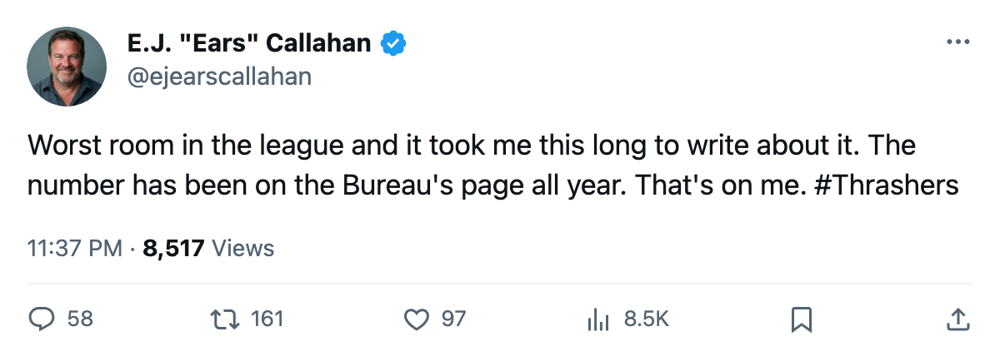
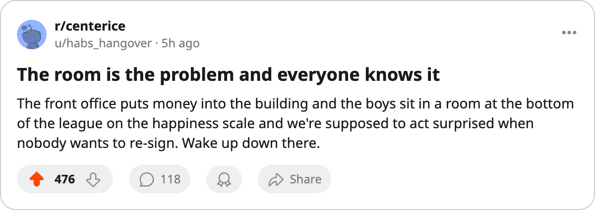

Sources: Morale Problems Brewing in Atlanta. The Bureau's Scale Has the Answer. 🔥
The Thrashers sit at 86.6, dead last. 2 men with expiring deals are in the league's lowest 15. Nobody from this desk has written about the room all month.
 E.J. "Ears" CallahanInsider · The Hot Stove
E.J. "Ears" CallahanInsider · The Hot Stove

Atlanta morale at the floor, 4 names walking over 2 summers

Atlanta's club morale average sits at 86.6, dead last in a 30-club league.
The  Atlanta Thrashers carry 2 of the 15 names at the floor of the Bureau's Morale Scale.
Atlanta Thrashers carry 2 of the 15 names at the floor of the Bureau's Morale Scale.  Byron Dafoe82 is at 72.
Byron Dafoe82 is at 72.  Magnus Arvedson77 is at 74. Both hit free agency this July.
Magnus Arvedson77 is at 74. Both hit free agency this July.
Dafoe started 68 games and played 57.5 minutes a night on $2.40M. Arvedson logged 11.6 minutes across 82 games on $2.49M. The pair eats $36.79M payroll, the second-lowest in the league behind only  Vancouver Canucks at $35.16M.
Vancouver Canucks at $35.16M.
The bigger problem is what happens after this summer.  Ilya Kovalchuk90 scored 138 points at 22 on $1.10M.
Ilya Kovalchuk90 scored 138 points at 22 on $1.10M.  Dany Heatley88 had 131 points at 24 on the same salary. Both carry morale at 87. Both have 1 year left.
Dany Heatley88 had 131 points at 24 on the same salary. Both carry morale at 87. Both have 1 year left.
Atlanta finished with 84 points, $25.99M in profit, and 14,430 bodies in the seats at $78 a ticket. A league source close to the building says the room has been tight for months. The man wouldn't go further. He didn't have to. The number on the scale is the number on the scale.
What walks, and when
The Thrashers have 4 names on expiring or near-expiring deals. The table gives you the shape of the next two summers.
| Player | Pos | Age | Salary | Morale | GP | Pts | Contract years |
|---|---|---|---|---|---|---|---|
| Byron Dafoe | G | 34 | $2.40M | 72 | 68 | — | 0 |
| Magnus Arvedson | LW | 31 | $2.49M | 74 | 82 | — | 0 |
| Ilya Kovalchuk | LW | 22 | $1.10M | 87 | 79 | 138 | 1 |
| Dany Heatley | RW | 24 | $1.10M | 87 | 79 | 131 | 1 |
Atlanta Thrashers hold 5 picks with 1 first-rounder. No other club has added to their surplus. They aren't in the rental-market conversation or hoarding draft capital. They carry the league's worst room and the 2 highest-scoring contracts on their books walk within 15 months.
A second source, a man who would know, says the payroll ceiling is the conversation every time a name comes up. The ceiling is $36.79M. Toronto is $60.04M.
The Kovalchuk and Heatley morale sits at 87 with 1 year left. The number you want attached to your top 2 scorers in a contract year is what  Marty Turco94 carries at
Marty Turco94 carries at  Dallas Stars: 95 on $0.60M. Anything below that and the agent's phone starts ringing in March, not after July.
Dallas Stars: 95 on $0.60M. Anything below that and the agent's phone starts ringing in March, not after July.
On the Morale Scale, 87 is a man who listens to the phone. 95 is a man who answers it.

